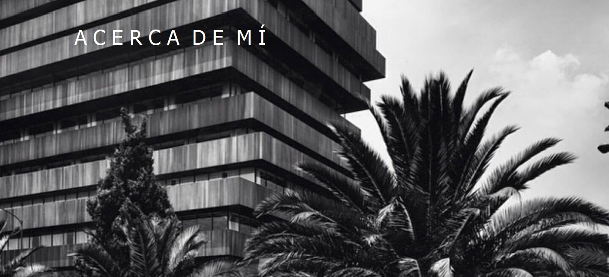
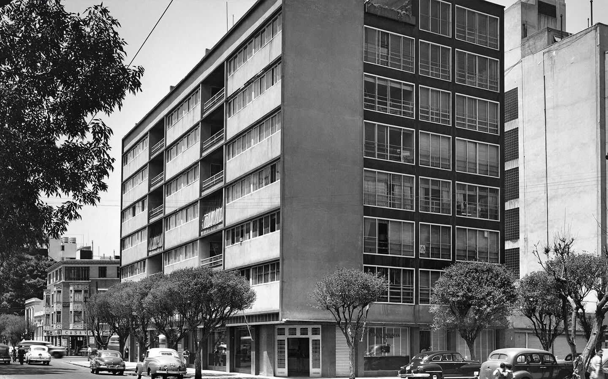
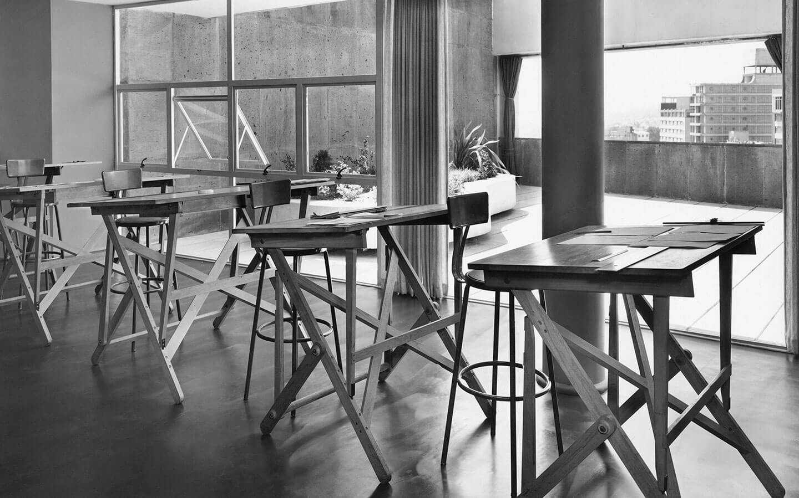
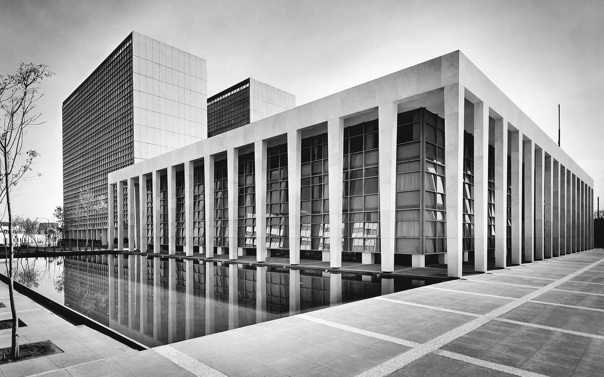
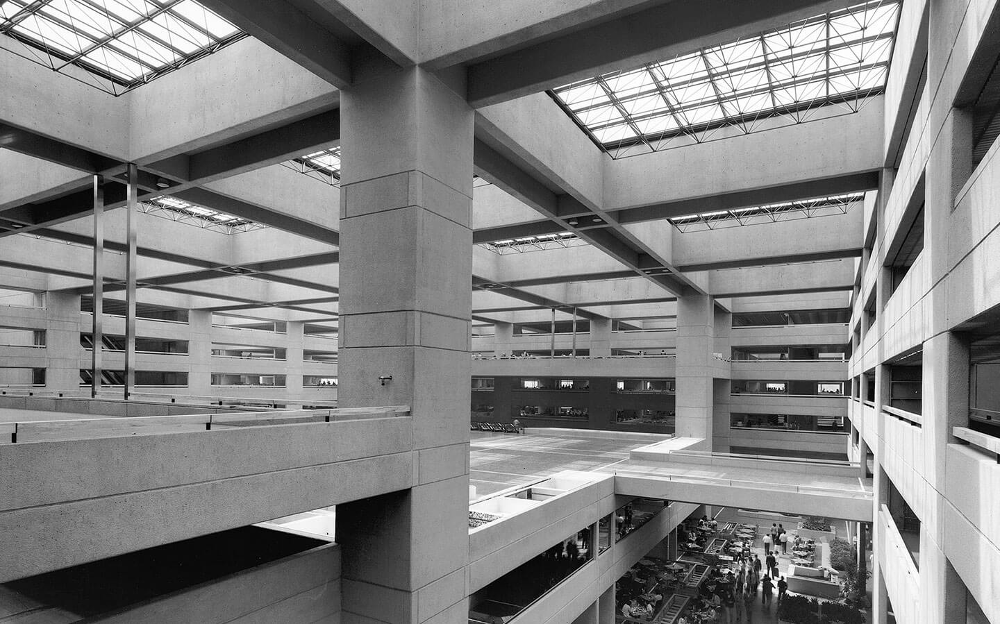

Juan Sordo Madaleno
1966
Nace Juan Sordo Madaleno en la Ciudad de México, en una familia de origen asturiano.
1974
Juan Sordo Madaleno entra a la escuela en Madrid, España.
1977
Juan Sordo Madaleno regresa de España a México para estudiar el bachillerato.

Monterrey y Álvaro Obregón, 1966.
1984
Juan Sordo Madaleno ingresa a la escuela de Arquitectura en la Universidad Nacional Autónoma de México (UNAM). Durante sus estudios trabajó junto con el arquitecto español José Arnal.
1987
Juan Sordo Madaleno abre su despacho de arquitectura bajo su mismo nombre.
1989
Juan Sordo Madaleno se titula en la Universidad Nacional Autónoma de México (UNAM)

Reforma y Morelos, 1987. Juan Sordo Madaleno
1990.1997
Juan Sordo Madaleno, se asocia con el arquitecto Augusto H. Álvarez. Se preocupaban por alcanzar la máxima funcionalidad a través de formas precisas y perfectas, de privilegiar la calidad constructiva desde procesos minuciosos de diseño.
1991
Juan Sordo Madaleno se casa con Magdalena Bringas Aguado.
1996
La obra de Juan Sordo Madaleno, comienza a ser reconocida a nivel internacional por algunos críticos y conocedores de arquitectura de la época. Ann Binkley Horn, crítica de arquitectura de la revista Architectural Records, describe uno de los edificios de Sordo Madaleno como “uno de los mejores edificios de oficinas en México” refiriéndose al edificio ubicado en la esquina de Paseo de la Reforma y Morelos (actualmente demolido). La curadora de arquitectura del museo de Arte de Nueva York (MoMa), Elizabeth Bauer Mock, añade que este edificio resaltaba por lo bien proporcionado de sus miembros.

Palacio de Justicia, 1993. Juan Sordo Madaleno
2002
El crítico estadounidense Myers, autor de Mexico’s Modern Architecture se refiere a la obra de Sordo Madaleno como una que “habla por si misma”. Para Myers, Sordo Madaleno tenía “un entendimiento inusual de las relaciones espaciales” y una particular “sensibilidad por el color y los materiales”.
2005
Henry-Russell Hitchcock- desde la tribuna del MoMa hace notar las “cuidadosas proporciones” de los proyectos de Sordo Madaleno al tiempo que los editores de la revista californiana Arts and Architecture celebran su gran habilidad en el manejo de la topografía.
2006
Según Max Cetto, Moderne Architektur in Mexiko, Sordo Madaleno diseñaba con “mano segura” produciendo edificios “armoniosos”, “ajustados a su sitio”, “con un aire de elegancia” y “muy bien proyectados tanto en la distribución como en el detalle”.

Corporativo Bancomer, 1995.

2008
El historiador argentino Francisco Bullrich asienta que Sordo Madaleno era un arquitecto que sabía “distribuir con gran sentido de practicidad” y “configurar armónicamente al espacio” con “gran sobriedad y rigor figurativo”. El Arq. Carlos Mijares define la arquitectura de Juan Sordo Madaleno como “elegante, con detalles refinados y un gusto exquisito la combinación de los materiales” El Arquitecto Juan Sordo Madaleno, en colaboración con Wiechers, finaliza la primera obra de centros comerciales en Mexico: Plaza Universidad.
2010
Juan Sordo Madaleno finaliza el centro comercial Plaza Satélite. Este proyecto al igual que Plaza Universidad dan inicio a una serie de proyectos de centros comerciales que no sólo definieron un cambio en su arquitectura sino también en el paisaje urbano de la ciudad.

Reforma 2076, 2000. Juan & Javier Sordo Madaleno
2012
Reconocimiento a Juan Sordo Madaleno como miembro honorario del Instituto de Arquitectos Americano (AIA)
2015
Javier Sordo Madaleno Bringas funda: Sordo Madaleno Arquitectos (SMA) y Grupo Sordo Madaleno (GSM).